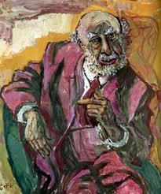

Pointing out, verbatim....
by S. Montalvo
I am currently working on two items, the Gestalt Therapy Verbatim, a documentary that is really a handful of facts, laboratory facts, so valuable certainly, rather than a construction of concepts as any of us might deduce from starting to read about psychotherapy in particular, and Ultimate Computing by S. Hameroff, a fascinating account of, I would argue, how contact-withdrawal, or the cycle of experience as fact, rather than as a drawing diagram for learning purposes as is more widely known, might be occurring at the nanoscale in the animal brain.
Of course, this choice is not arbitrary. I am firmly convinced that Perls's Gestalt perspective is itself the first stage of a psychology rooted in physics, although by then the observed patterns of behaviour were then signalled mediated by certain philosophical constructs prevalent at the time of his work, in the absence of a language of his own and in the search for one by a transgressive avant-gardist such as he was, if we take into account both his use and his critique of the names of concepts commonly used by Buber, Husserl or Heidegger in trying to produce his concepts.
Then, deep learning
Indeed, struggle or confusion that seems to be the correlate of difficult times when a unified system of science and or field theory, as it was later established and the gestalt approach so passionately advocated even then, was being built. Indeed, we can find there some documents that prove that Professor F. Perls was familiar with the work of A. Whitehead, the pioneer author whose contributions, rescued or reinvented as soon as physics has reached its opportune moment, could help physicists to deal with the phenomenological principle, as A. Shimony calls it in a well-known discussion with R. Penrose. Though, in the right context, again within a phenomenological working environment. Here it does make sense that the main gestalt framework has been so interested in the how-to —addressing its phenomenological questions— rather than in composing a theory of the psyche.
So let us take a closer look at these texts and see how smoothly the two extremes, Gestalt panpsychism and that ultimate physical biology which it turns out could also explain consciousness, fit together.
Useful links: Quantumconsciousness | Abner Shimony by | Psychiatry In A New Key